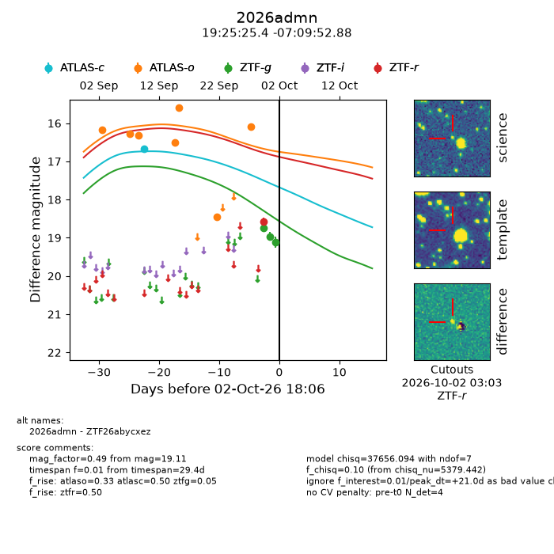
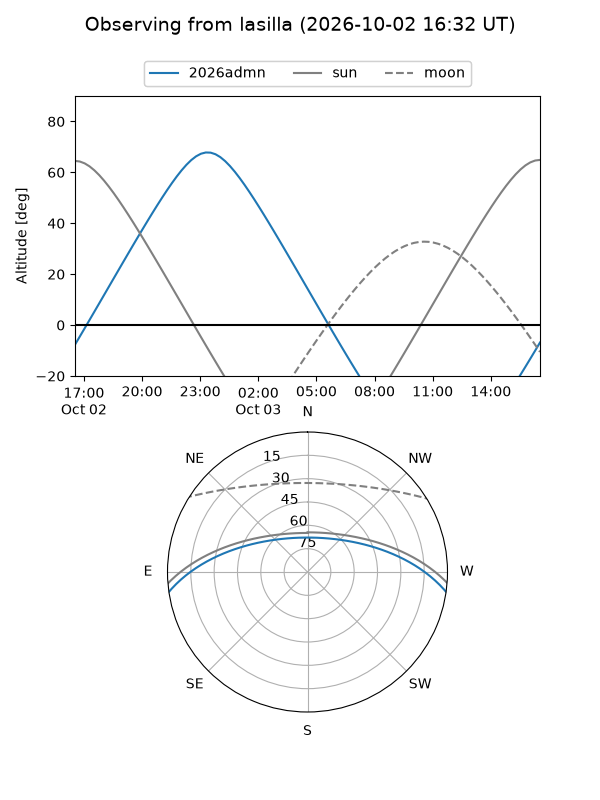
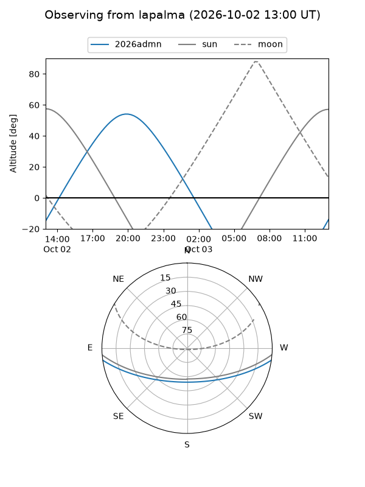
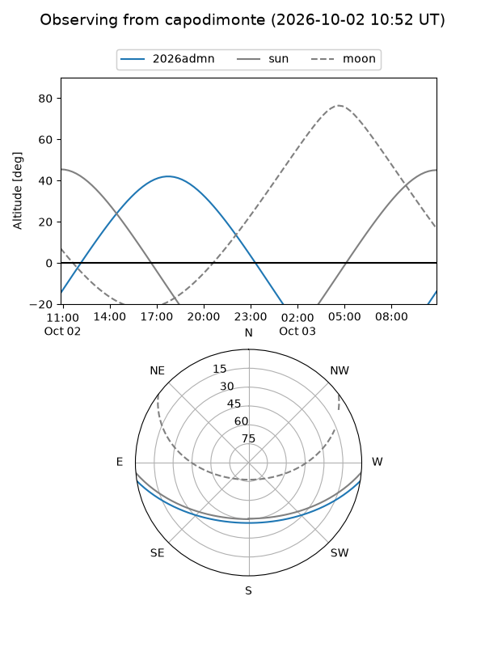
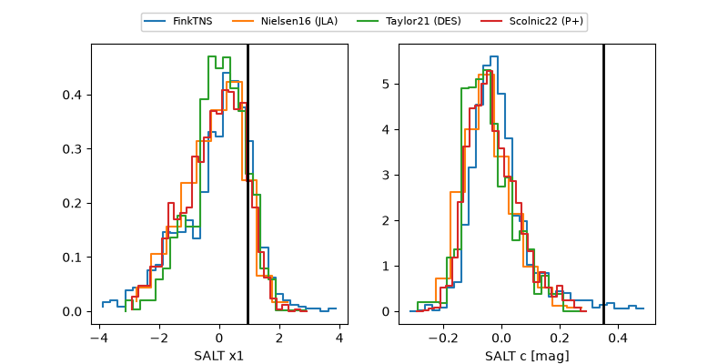

2026admn
Target 2026admn at 2026-10-03 06:03
Aliases and brokers:
FINK-ZTF: ztf.fink-portal.org/ZTF26abycxez
Lasair-ZTF: lasair-ztf.lsst.ac.uk/objects/ZTF26abycxez
ALeRCE-ZTF: alerce.online/object/ZTF26abycxez
YSE-PZ: ziggy.ucolick.org/yse/transient_detail/2026admn
TNS name: wis-tns.org/object/2026admn
Direct TNS query: direct search
alt names
ZTF26abycxez (ztf,fink_ztf)
2026admn (tns,yse)
Coordinates:
equatorial (ra, dec) = 291.3558,-7.16469
equatorial (HMS+DMS) = 19:25:25.40,-07:09:52.88
galactic (l, b) = (30.3555,-10.79741)
Flags:
TNS type: nan
peak dt: +21.5
Photometry:
last atlasc=16.66, atlaso=16.08, ztfg=19.11, ztfr=18.57
1 atlasc, 7 atlaso, 3 ztfg, 1 ztfr detections
Lightcurve

Visibility



Additional plots
